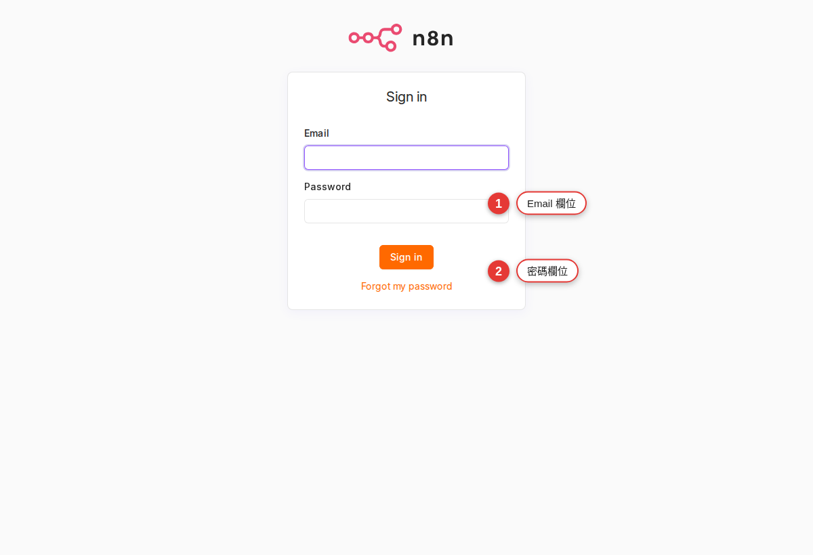
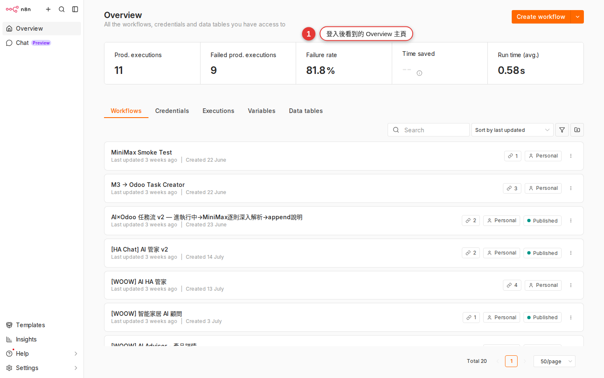

Open Woow n8n: sign in and a 5-minute tour
A colleague tells you to "go open a workflow in n8n", but where is the URL, how do you get an account, and what do you click once you are in? This chapter takes you from opening n8n.woowtech.io in a browser, through typing in the account the company gave you, to the home page and the check that you landed in the right place. By the end you have a workspace you can start working in.
Why five minutes on sign-in pays off
It usually goes like this. One day your manager drops a line in Slack: "take that repetitive job and set it up in n8n", and that is the last you hear about it. You google "n8n login", land on n8n.io (that company's cloud edition), sign up, sign in, start building, and only halfway through do you notice: you are not on the company instance at all, your colleagues cannot see the workflow you built, and the company credentials are out of reach.
WoowTech runs its own self-hosted n8n at https://n8n.woowtech.io/. This chapter settles three things:
- The URL — where you press Enter
- The account — how to get one from IT, and what it looks like
- Your first sign-in — what you will see, and what it means when something is missing
If you have not read Chapter 1, "What n8n is", skim it first so that "Workflow / Execution / Credential" do not stop you cold later on.
Woow n8n is a self-hosted instance
Line up a few terms first. You will need them when you talk to IT:
| Term | What it means | Who that is at WoowTech |
|---|---|---|
| n8n.io | The n8n company's own website, plus the cloud SaaS edition they sell | Not what we use; we only go there to read the docs and copy templates |
| Self-hosted instance | The n8n software installed on your own company's server | That is our n8n.woowtech.io |
| Cloudflare Proxy | A CDN / protection layer the company puts in the middle | When you open n8n.woowtech.io you actually pass through Cloudflare first and then into the company network, which is why it works from home, from the office and at a customer site |
| HTTPS | The "encrypted connection" behind the https:// at the start of the URL |
Woow n8n is always https; if you see an address starting with http://, you typed it wrong |
Put simply: n8n.woowtech.io is "the company's own n8n". The n8n cloud you may have played with at home, and "the official one" your colleagues mention, are a different universe. Your workflows exist only in this one instance; change the URL and they are gone.
https://n8n.woowtech.io/ in your browser and name it "Company n8n". After that you never have to google your way back, and you will not wander into the official n8n.io site by mistake.Where does the account come from?
A Woow n8n account is not something you register yourself; IT or an admin creates it for you in the system. Because this company instance has no SMTP mail configured (we checked: /rest/settings returns smtpSetup: false), you will not get the official invite email; IT hands you an invite link (Invite URL) or a temporary password over Slack or in person. There is no hard rule about the email domain (n8n does not enforce one) — the WoowTech convention is 你的名字@woowtech.io, but IT may use something else.
If your account has not been activated yet and the login page just sits there when you press the button, the "troubleshoot" section of this chapter shows you what to tell IT and how to describe the problem.
Five steps for your first sign-in
Have a browser ready (Chrome, Edge, Safari and Firefox all work), with the temporary password IT gave you at hand.
-
Open a browser and paste
https://n8n.woowtech.io/into the address barPress Enter. The address has to be
https, nothttp. If you type onlyn8n.woowtech.io, the browser usually fills in https for you, which is normal. -
You see the n8n sign-in screen
The background is light gray (this WoowTech build has no dark-theme option turned on), with a white card in the middle. The top of the card carries n8n's pink / orange-red connected-node logo and the lowercase word "n8n", and below it two input fields, Email and Password, an orange Sign in button, and one small link under the button, Forgot my password (not "Forgot password?"). There is no "Sign in with SSO / Sign in with Google" button — WoowTech has not enabled SSO. Seeing this screen means you reached the right place.

Figure 2-1The sign-in card: red borders mark the Email and Password fields, with the orange Sign in button and the Forgot my password link below. -
Enter the email and password IT gave you
Use exactly the string IT gave you (it may mix upper and lower case and special characters, so copy and paste rather than typing it by hand). If IT gave you an Invite URL (for example
https://n8n.woowtech.io/signup?inviterId=…&inviteeId=…) instead of a password, you are on the "accept the invitation" path — open that address, set your own password and name on the page that comes up, and you are signed in automatically when you are done. In that case skip to step 5.Warning: if you are on your own computer, the browser may ask "Save this password?" — say no for now, because you may change the password in the next step and storing a temporary one is pointless. Save the new one once you have changed it. -
Press Sign in (or accept the invitation and set a password)
If IT gave you a temporary password, you can change it after signing in at avatar top right → Personal settings → Change password. The n8n Community edition does not force a password change on the first sign-in; you have to do it yourself. The minimum password length is 8 characters (we checked:
passwordMinLength: 8), and mixing letters, numbers and symbols is a good idea. -
You land on the home page: sidebar on the left, workspace in the middle
Once you are in, you land on the home page at
/home/workflows. The screen splits into three parts: a narrow sidebar on the left (roughly Overview / Workflows / Credentials / Executions / Insights / Templates / Help — which of those you actually see depends on your role, see the next section), the main area in the middle (usually an empty Workflows list the first time, or a "Get started" card), and an avatar in the bottom-right corner (your initials; n8n puts the avatar at the bottom of the sidebar, not in the top right).
Figure 2-2The home page after a successful sign-in: the narrow sidebar on the left, the Workflows main area in the middle, your avatar at the bottom of the sidebar — see those three and you are in the right place.
What tells you the sign-in worked
With signing in, "the screen changed" is only surface success. What you need to confirm is that you really reached your own workspace, with the access you should have. Use this checklist:
| Check | What OK looks like | What a failure looks like |
|---|---|---|
| The address bar | Sits at https://n8n.woowtech.io/workflows or a similar path |
Still at /signin, or it jumped to some other address |
| The left sidebar | You can see Workflows, Executions, Credentials and Templates | No sidebar at all, or only a few grayed-out items you cannot click |
| Bottom left of the sidebar | A round avatar (usually the first letter of your name or of your email) that opens Settings / Sign out when you click it | The whole avatar area is missing, or it still shows a Sign in button |
| Top of the page | No red error banner, and no "You do not have access" message | A white-on-red error bar, or an error covering the whole screen |
| The Workflows list | Empty (perfectly normal on a first sign-in), or already holding a sample workflow IT left for you | A whole row of unfamiliar workflows belonging to other people ← which is not actually a failure (the workspace may be shared), but be careful not to change anything |
"I can't see that feature" — three common reasons
After signing in, the most common confusion is: "A colleague said to click Credentials on the left, but I don't even have that item." Usually n8n is not broken; it comes down to your permissions, your workspace or the state of your account. Here is the table:
| Symptom | Likely cause | What to do |
|---|---|---|
| Sign in does nothing / the screen stays on the login page | The account is disabled, the email was never activated, or the password is wrong | Tell IT "my n8n account xxx@woowtech.io cannot sign in, Sign in does nothing" and ask them to check the account status |
| You get in, but you do not have the "Admin panel / Users management" your colleague talks about | Only the Owner (the first person who set up the instance) or the Admin role sees that, and the Admin role exists only in the n8n Cloud Pro / Enterprise editions. This WoowTech build is the Community edition (we checked: enterprise.saml/ldap/oidc are all false), so there are only two roles, Owner and Member |
Normal; hand anything to do with running the instance to the Owner |
| You get in and see a pile of other people's workflows | You were added to a shared workspace / project, and those are your colleagues' work | Do not go clicking Delete, and do not edit their fields. To practice, press New workflow and start your own, or work inside your Personal space |
| The Credentials list is empty, or a credential a colleague created is not there | The Member role sees only credentials "shared with you" plus "created by you"; anything sitting unshared in someone else's personal space stays hidden | To use one, ask its owner to press Share and share it with you, or to move the credential under a Team project |
| A red banner saying "You do not have access to this workspace / project" | Your account exists, but it was never added to that project | Ask the Owner "please add me to the XX project" — name the project clearly |
| Advanced items such as Insights, Variables and Source Control are missing | Those are Enterprise / Cloud Pro features. WoowTech is on the Community edition, so none of them are there | Normal, nothing to worry about; everything this guide uses is within what the Community edition offers |
Phone, tablet, work laptop — can you use them all
n8n is a pure web app, with nothing to install. In theory any device with a browser can open it. But "can open it" and "is workable on it" are two different things:
| Device | What you can do | What not to do |
|---|---|---|
| Work or home computer (screen ≥ 13 inches) | Build workflows, drag nodes, debug, read executions, edit fields — everything | Nothing |
| Tablet (iPad, Android tablet) | Read the execution history, see how a workflow is laid out, trigger a run by hand with Execute | Dragging nodes, heavy editing (touch is hard to aim precisely on the canvas) |
| Phone | Check whether today's runs went red, trigger a run by hand with Execute workflow, read notifications | Editing a workflow (the nodes bunch up), or setting your password on a first sign-in (the fields are small and easy to mistype) |
Watch the sign-in session too: one browser can hold only one n8n account at a time. If you need two accounts at once (your own plus a test account, say), either open an incognito window or install a second browser (one Chrome, one Firefox).
Two places you have to remember
Chapter 3, "Workspace tour" takes the interface apart piece by piece. Here we cover only the two buttons you need constantly; remember them and you will not get lost:
-
The n8n logo in the top left = "back to the home page"
Whether you are editing a workflow or reading the error detail of an execution, clicking the n8n logo in the top left, or Workflows in the sidebar, takes you back to the workflow list home page. That is your "Home" button.
-
The avatar at the bottom left of the sidebar = "Settings / Sign out"
Click the round avatar at the very bottom of the sidebar (n8n puts the avatar at the bottom of the left sidebar, not in the top right, which is easy to miss) and a small menu opens with Settings (change your password, change personal preferences) and Sign out.
Warning: on a shared company computer, always click Sign out before you leave your desk. An n8n session lasts a long time by default, so if you do not sign out, the next person at that computer walks straight into your workflows.
What every other sidebar item is (Executions, Credentials, Templates, Insights, Admin panel and so on) and when to use it is taken apart in the next chapter. All this chapter asks is that you can sign in, recognize the home page and find the sign-out.
Common pitfalls
Signing in looks simple, but company environments vary, so there are many ways to get stuck. Here are the four most common; work through them and it usually clears:
-
The login page spins forever, or goes completely white
Rule out your own side first:
(1) Press Ctrl+Shift+R (Cmd+Shift+R on a Mac) to force a reload.
(2) Try a different browser (if Chrome fails, try Edge).
(3) Try a different device (a phone on 4G, off the company wifi).
Only when all three fail should you report to IT that "n8n.woowtech.io is unreachable on every platform" — at that point it is usually the server or Cloudflare. -
A red "You do not have access" message after signing in
Your account works, but it was never added to a workspace or project. Do not keep retrying the sign-in; the result will be the same. Screenshot the message, send it to IT or the workspace admin and say "please add me to the XX workspace". Once the access is granted, refresh the page and you are in.
-
You forgot your password
There is a Forgot my password link under the Sign in button on the login page. Click it, enter your email, and n8n shows a "reset email sent" message.
But on this WoowTech build that email never goes out — we checked:https://n8n.woowtech.io/rest/settingsreturnssmtpSetup: false, which means the instance has no SMTP connected at all. The screen says "sent", but nothing will arrive. The only fix is to ask the Owner or IT to reset it by hand from the CLI (something liken8n user-management:reset). A message template: "please reset my password on n8n.woowtech.io. My account isxxx@woowtech.io, the instance has no SMTP, so please use the CLI or change it directly in the back end." -
The layout breaks on a phone and you cannot tap the buttons
Try Chrome's "Desktop site" mode first. If that still fails, give up and move to a computer. The n8n canvas was never meant for small screens; that is a design limit, not a bug. On a phone, treat it as a "viewing tool" and do not expect to edit.
-
Two accounts signed in at once keep kicking each other out
One browser can keep only one session. To use two accounts at once, open an incognito window (in Chrome: Ctrl+Shift+N), or install a second browser and keep them apart. Do not sign in to two accounts in two tabs of the same ordinary window; they will overwrite each other.
FAQ
Do I have to use the company's n8n.woowtech.io? Can I register my own account on n8n.io instead?
For work, always use the company's. Three reasons:
- Company credentials (Google / Slack tokens, tokens for internal APIs) exist only on the company instance, and an account you register on n8n.io cannot reach them.
- Colleagues have to be able to take over your workflows and read the execution records, and only the company instance allows that.
- Company data landing in an outside cloud service is a security landmine.
For personal tinkering and learning, self-hosting your own n8n or using the free n8n.io cloud plan is completely fine, but those are a separate world from the company's workflows.
How often should I change my password?
Woow n8n itself does not enforce a fixed cycle. But since your credentials live inside it (they are the keys that act on the company's behalf across every SaaS), change it yourself every three to six months at avatar bottom left → Settings → Personal → Change password. If you think someone may have got hold of your password (you forgot to sign out on a shared computer, say), change it right then.
Can I be signed in to two accounts at once?
One browser holds one account session at a time. To use two accounts at once, put one in an incognito window, or sign in from different browsers (one Chrome, one Firefox). Two tabs in one ordinary window will sign each other out, which is not worth the trouble.
Is there SSO? Can I sign in with a Google account?
n8n officially supports three SSO methods, SAML, LDAP and OIDC, but all of them are Enterprise (paid) features. This WoowTech build is Community (the free edition); we checked /rest/settings and enterprise.saml / ldap / oidc are all false, so SSO is unlicensed and cannot be turned on. So: email and password only, with no "Sign in with SSO" and no one-click Google button. If IT ever upgrades to Enterprise, an SSO button will appear on the login page.
Can my phone receive notifications from n8n?
n8n does not push notifications to phones itself. The "notifications" you see usually come from a workflow you built pushing a message into Slack / LINE / email, and those apps notify you. This chapter is about the sign-in interface; how to build notifications comes in Chapter 11, "Popular SaaS integrations".
There is a lot in Personal settings. Can I change things freely?
The Settings you open from the avatar has two layers: Personal (change your own password, API keys, personal preferences) and Instance (Users, External Secrets, Log Streaming and so on, which affect the whole instance). The first is safe to experiment with; the second is visible and clickable only to the Owner — with the Member role those options never appear, so you could not click them even if you wanted to. Appendix A · Settings reference lays out the differences in a table.
Can I reach n8n.woowtech.io from home? Do I need a VPN?
No. n8n.woowtech.io is exposed publicly through the Cloudflare Proxy, so it works from home, from a coffee shop and at a customer site. Because it is public, password strength matters more — do not use something guessable like "Woow1234".
I signed in. What is the next step?
The route we suggest: read Chapter 3, "Workspace tour" first to get clear on every sidebar item and on the middle of the screen, then jump to Chapter 13, "Managing credentials" and set up the first account you will need (Slack or Google, say), so that later chapters have something to build the first workflow with. If you are itching to start, you can also skip straight to Chapter 8.